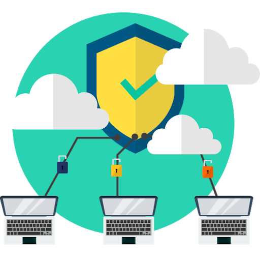

En este mundo hiper-conectado las capacidades de las organizaciones para lidiar con la inseguridad informática muchas veces son limitadas, porque los ataques a la red se vuelven cada vez más frecuentes y sofisticados. ¿Es posible estar 100% seguros contra todo peligro, mucho más cuando el imperativo empresarial es lograr la máxima movilidad posible, objetivo que trae grandes desafíos?
El internet ha multiplicado de forma exponencial la conectividad de clientes y negocios. Millones de dispositivos: computadoras, teléfonos inteligentes, tablet, y otros aparatos comparten información de negocios en la red; ignorando las amenazas de los cibercriminales y sin conocimiento de la seguridad informática.
Considerar seriamente la posibilidad de delegar la gestión de la seguridad informática en una compañía externa, sería permitir que se ocupe de administrar y gestionar la seguridad de los sistemas y las aplicaciones que se utilizan cotidianamente, cuestión que no es más que recurrir a los beneficios de la seguridad administrada.
Hoy en día es indispensable contar con dispositivos que protejan tus datos empresariales tanto como los de los usuarios. La pérdida, robo o filtración de información son los casos más comunes que ocurren en empresas que no cuentan con la correcta administración de sus dispositivos de seguridad informática y es por eso que ocurren.
Algunas de las ventajas son:



Contar con un plan para proteger tus datos personales siempre es importante al momento de conectarse a internet. Existen varias formas de blindar tus equipos y cuidar la información compartida.